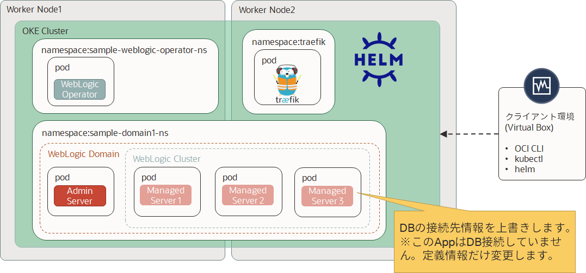
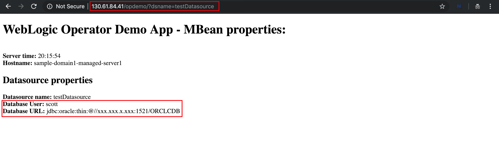
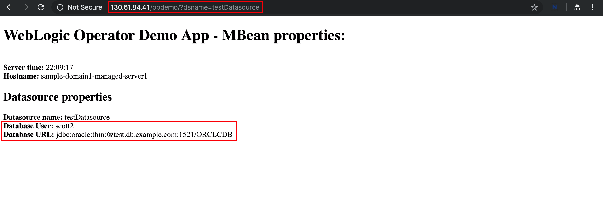

Oracle WebLogic Operator チュートリアル¶
JDBC Datasource parametersのオーバーライド¶
ドメインリソースをデプロイする前に、「永続ボリュームのドメイン」オプションと「イメージのドメイン」オプションの両方のWebLogicドメイン構成を変更できます:
- ドメインが永続ボリュームにある場合、WLSTまたはWDTを使用して構成を変更できます。
- どちらの場合でも、構成のオーバーライドを使用できます。
ドメインの実際のconfig.xmlまたはシステムリソースファイルを変更せずにWebLogicドメインホーム設定をカスタマイズするには、設定オーバーライド（状況構成とも呼ばれます）を使用します。たとえば、JDBCデータソースXMLモジュールのユーザー名とURLをオーバーライドして、別のデータベースを参照することができます。
オーバーライドを使用してドメインをカスタマイズできます。例えば、QAから実稼働に移動したり、異なるサイトに展開したり、同じサイトに複数回展開したりすることができます。
オーバーライドは、「構成のオーバーライド」と呼ばれる組み込みのWebLogic機能を活用します。これは、「状況構成」と呼ばれることがよくあります。状況構成は、WebLogicのconfig.xmlおよびシステムリソースモジュールのXMLファイルの構造によく似たXML形式のファイルで構成されます。さらに、これらのファイルの属性フィールドには、動詞の追加、置換、削除を埋め込んで、フィールドに必要なオーバーライドアクションを指定できます。
詳細についてはこちらをご確認ください。

JDBCオーバーライドの準備¶
オペレーターは、オーバーライドテンプレート用に別のファイル名でなければなりません。JDBCの場合、jdbc-MODULENAME.xmlである必要があります。 MODULENAMEは、元のconfig.xmlファイルで定義されたシステムリソースのMBean名に対応する必要があります。
Oracle Pipelinesを使用して作成したカスタムWebLogicイメージには、testDatasourceというJDBCデータソースがあります。したがって、jdbc-testDatasource.xmlという名前のテンプレートを作成する必要があります。
必要なファイルを作成する前に、まず、状況対応のJDBC設定テンプレートと version.txtファイルのみを含むディレクトリを作成します。
mkdir -p /u01/override
テンプレートファイルを作成します:
cat > /u01/override/jdbc-testDatasource.xml <<'EOF' <?xml version='1.0' encoding='UTF-8'?> <jdbc-data-source xmlns="http://xmlns.oracle.com/weblogic/jdbc-data-source" xmlns:f="http://xmlns.oracle.com/weblogic/jdbc-data-source-fragment" xmlns:s="http://xmlns.oracle.com/weblogic/situational-config"> <name>testDatasource</name> <jdbc-driver-params> <url f:combine-mode="replace">${secret:dbsecret.url}</url> <properties> <property> <name>user</name> <value f:combine-mode="replace">${secret:dbsecret.username}</value> </property> </properties> </jdbc-driver-params> </jdbc-data-source> EOF
Note
このテンプレートには、JDBCユーザー名とURLパラメーターをオーバーライドするマクロが含まれています。この値はKubernetesシークレットから参照されたものです。
次に、演算子のバージョンを反映するversion.txtを作成します。
cat > /u01/override/version.txt <<EOF 2.0 EOF
次にテンプレートとバージョンファイルのディレクトリからKubernetes構成マップ（jdbccm）を作成します。
kubectl -n sample-domain1-ns create cm jdbccm --from-file /u01/override kubectl -n sample-domain1-ns label cm jdbccm weblogic.domainUID=sample-domain1
設定マップの名前(jdbccm)に注意してください。
以下のように作成した構成マップを確認できます:
$ kubectl describe cm jdbccm -n sample-domain1-ns Name: jdbccm Namespace: sample-domain1-ns Labels: weblogic.domainUID=sample-domain1 Annotations: <none> Data ==== jdbc-testDatasource.xml: ---- <?xml version='1.0' encoding='UTF-8'?> <jdbc-data-source xmlns="http://xmlns.oracle.com/weblogic/jdbc-data-source" xmlns:f="http://xmlns.oracle.com/weblogic/jdbc-data-source-fragment" xmlns:s="http://xmlns.oracle.com/weblogic/situational-config"> <name>testDatasource</name> <jdbc-driver-params> <url f:combine-mode="replace">${secret:dbsecret.url}</url> <properties> <property> <name>user</name> <value f:combine-mode="replace">${secret:dbsecret.username}</value> </property> </properties> </jdbc-driver-params> </jdbc-data-source> version.txt: ---- 2.0 Events: <none>
最後に、JDBCユーザー名とURLパラメーターの値を含むシークレットを作成する必要があります。
シークレットを作成するには、次のkubectlコマンドを実行します:
kubectl -n sample-domain1-ns create secret generic dbsecret --from-literal=username=scott2 --from-literal=url=jdbc:oracle:thin:@test.db.example.com:1521/ORCLCDB kubectl -n sample-domain1-ns label secret dbsecret weblogic.domainUID=sample-domain1
値(username=scott2, url=jdbc:oracle:thin:@test.db.example.com:1521/ORCLCDB)およびシークレットの名前(dbsecret)に注意してください。
変更を適用する前に、デモWebアプリケーションを使用して現在のJDBCパラメーターを確認します。次のURLを開きます:
http://EXTERNAL-IP/opdemo/?dsname=testDatasource

データベースユーザーとデータベースURLの値に注意してください。
最後の手順は、ドメインリソース定義（domain.yaml）を変更して、オーバーライド構成マップとシークレットを含めることです。
domain.yamlを開き、spec:セクションで次のエントリを追加します。インデントを適切に保つように注意してください:
spec: [ ... ] configOverrides: jdbccm configOverrideSecrets: [dbsecret]
ドメインリソース定義ファイルの変更を保存します。
WebLogicドメインを再起動します¶
オーバーライドの変更には、すべてのWebLogicポッドを停止し、ドメインリソース（変更されている場合）を適用し、WebLogicポッドを有効にする前に再起動する必要があります。
ドメインで実行中のすべてのWebLogic Serverポッドを停止するには、変更されたリソースを適用してからドメインを起動します:
-
domain.yamlを再度開き、ドメインリソース
serverStartPolicyをNEVERに設定します。 -
変更を適用します:
kubectl apply -f /u01/domain.yaml
ポッドの状態を確認します:
$ kubectl get po -n sample-domain1-ns NAME READY STATUS RESTARTS AGE sample-domain1-admin-server 1/1 Terminating 0 1h sample-domain1-managed-server1 1/1 Terminating 0 1h $ kubectl get po -n sample-domain1-ns No resources found.
すべてのポッドが終了し、リソースが見つからなくなるまで待ちます。
-
domain.yamlを再度開き、ドメインリソース
serverStartPolicyをIF_NEEDEDに戻します。 -
変更を適用します:
kubectl apply -f /u01/domain.yaml
ポッドのステータスを定期的に確認し、すべてのポッドが起動してREADYになるまで待ちます:
$ kubectl get po -n sample-domain1-ns NAME READY STATUS RESTARTS AGE sample-domain1-admin-server 1/1 Running 0 2m sample-domain1-managed-server1 1/1 Running 0 1m
デモWebアプリケーションを使用して、JDBCデータソースを再度確認します:
http://EXTERNAL-IP/opdemo/?dsname=testDatasource

次の変更を確認することができます:
- Database User: scott2
- Database URL: jdbc:oracle:thin:@test.db.example.com:1521/ORCLCDB
続いて、ローリングアップデートによるデプロイ済みアプリケーションの更新に進んでください。